before my lisbon trip i wrote myself a browser prep checklist and saved it on the desktop, open it and just do what it says in chrome, all of it, leave the browser sitting on the last thing the list tells me to have up so i can see it worked
{
"config": [
{
"type": "execute",
"parameters": {
"command": "mkdir -p /home/user/Desktop && python3 -c \"open('/home/user/Desktop/lisbon-browser-prep.txt','w').write('LISBON TRIP - CHROME PREP CHECKLIST (do in order)\\n\\n1. Make a new bookmarks folder on the bookmarks bar called: Lisbon 2024\\n\\n2. Put these three pages in that folder as bookmarks:\\n - https://www.visitlisboa.com\\n - https://www.cp.pt/passageiros/en\\n - https://www.timeout.com/lisbon\\n\\n3. Turn the bookmarks bar on so it is always showing.\\n\\n4. Set Chrome to open these pages on startup instead of the new tab page:\\n https://www.visitlisboa.com\\n\\n5. Clear browsing history for the last hour (history only, keep cookies and passwords).\\n\\n6. Finally open the Lisbon weather page at https://www.timeanddate.com/weather/portugal/lisbon and leave it on screen.\\n')\"",
"shell": true
}
}
],
"evaluator": {
"func": "check_include_exclude",
"result": {
"type": "vm_command_line",
"command": "echo ostg-v16",
"shell": true
},
"expected": {
"type": "rule",
"rules": {
"include": [
"__judge_decides__"
]
}
}
}
}
step 1 21:17:05
THINKINGThe user wants me to open a browser prep checklist file on the desktop and follow its instructions in Chrome. First, I need to read the file. Let me open the text file on the desktop to see what it says. I'll double-click it to open it.
ACTIONI'll start by opening the checklist file on the desktop to see what it asks for.
EXECUTED (pyautogui in VM)pyautogui.doubleClick(1850, 883)
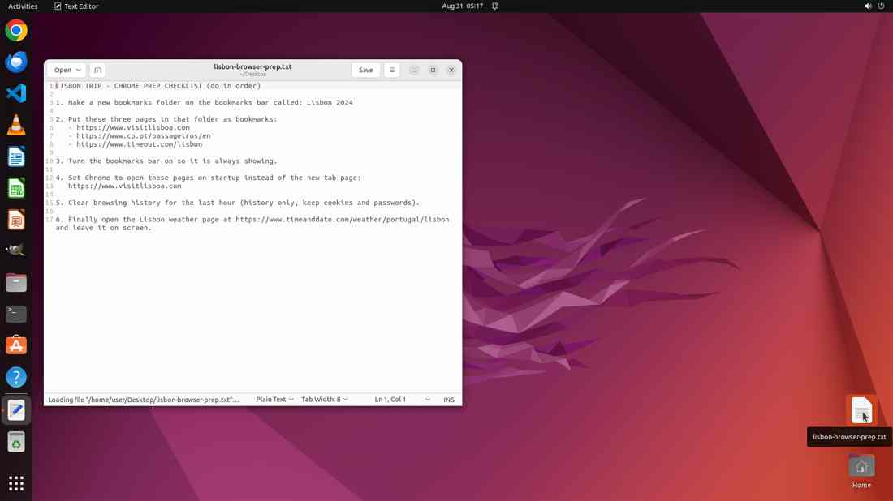
step 2 21:17:38
THINKINGLet me read the checklist carefully:
1. Make a new bookmarks folder on the bookmarks bar called: Lisbon 2024
2. Put these three pages in that folder as bookmarks:
- https://www.visitlisboa.com
- https://www.cp.pt/passageiros/en
- https://www.timeout.com/lisbon
3. Turn the bookmarks bar on so it is always showing.
4. Set Chrome to open these pages on startup instead of the new tab page:
https://www.visitlisboa.com
5. Clear browsing history for the last hour (history only, keep cookies and passwords).
6. Finally open the Lisbon weather page at https://www.timeanddate.com/weather/portugal/lisbon and leave it on screen.
So I need to do all of these in Chrome, and leave it on the timeanddate weather page at the end.
Let me start by opening Chrome. The Chrome icon is in the taskbar on the left. Let me click it.
ACTIONI can see the checklist. It has 6 tasks:
1. Create a bookmarks folder "Lisbon 2024" on the bookmarks bar
2. Add three pages (visitlisboa.com, cp.pt/passageiros/en, timeout.com/lisbon) to that folder
3. Turn the bookmarks bar on (always showing)
4. Set Chrome to open visitlisboa.com on startup
5. Clear browsing history for the last hour (history only)
6. Open the Lisbon weather page and leave it on screen
Let me open Chrome to begin.
THINKINGChrome is open. The bookmarks bar isn't showing yet. I need to first enable the bookmarks bar (task 3), then create the folder. Let me first enable the bookmarks bar using Ctrl+Shift+B, which toggles it. Actually, let me first create the folder, but the folder needs to be on the bookmarks bar. Let me enable the bar first so I can see it.
Let me press Ctrl+Shift+B to toggle the bookmarks bar on.
ACTIONChrome is open. Let me first enable the bookmarks bar so it's always showing (task 3), using Ctrl+Shift+B.
EXECUTED (pyautogui in VM)pyautogui.hotkey("ctrl", "shift", "b")
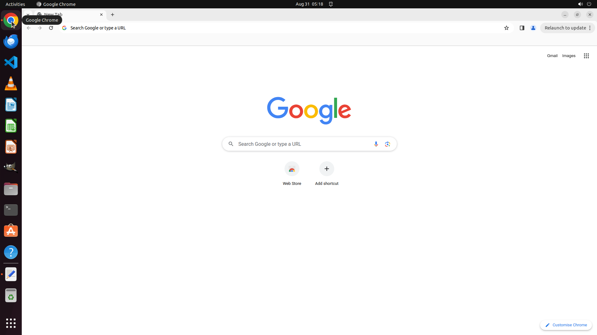
step 4 21:19:05
THINKINGHmm, the bookmarks bar doesn't seem to be visible now. Actually the layout changed slightly - the address bar moved. But I don't see a bookmarks bar area. It's possible it was already off and this toggled it. Let me look more carefully. The area below the address bar (y~70-85) looks empty/white. Maybe the bookmarks bar is empty so it's thin. Let me take a screenshot to check. Actually, the previous screenshot had the star icon at y~59 next to address bar. Now there's a star at y~59 and a "Relaunch to update" button appeared.
The bookmarks bar should appear as a thin strip below the toolbar. It may be empty. Let me verify by checking. Actually it's hard to tell. Let me just proceed - I'll create a folder on the bookmarks bar. To add a bookmark, I need to be on a page.
Approach: I'll create the "Lisbon 2024" folder first via right-click on bookmarks bar > Add folder. Then add the three bookmarks to it.
Actually, a cleaner approach: Navigate to each of the three URLs and bookmark them, choosing the Lisbon 2024 folder. But I need the folder to exist first.
Let me first create the folder. I'll right-click on the bookmarks bar area (the empty strip around y~78).
ACTIONThe bookmarks bar should now be enabled. Let me right-click on the bookmarks bar area to create a new folder.
EXECUTED (pyautogui in VM)pyautogui.rightClick(599, 116)
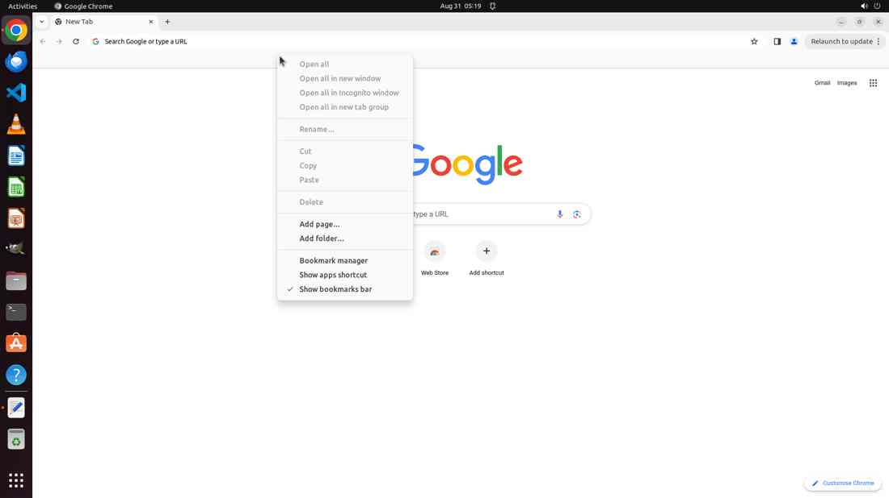
step 5 21:19:51
THINKINGThe context menu appeared with "Show bookmarks bar" checked (confirmed task 3 done). Now I'll click "Add folder..." to create the Lisbon 2024 folder on the bookmarks bar.
ACTIONThe menu confirms "Show bookmarks bar" is checked. Let me click "Add folder..." to create the folder.
EXECUTED (pyautogui in VM)pyautogui.click(691, 515)
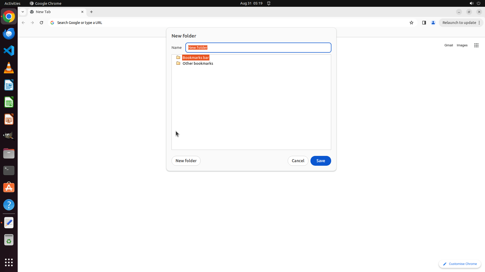
step 6.1 21:20:27
THINKINGThe New folder dialog appeared. The "Bookmarks bar" is already selected as the parent location (highlighted). The name field has "New folder" selected. I'll type the folder name and click Save.
ACTIONThe folder dialog is showing with "Bookmarks bar" as the parent. Let me type the name and save.
EXECUTED (pyautogui in VM)pyautogui.tripleClick(1020, 188)
step 6.2 21:20:30
same model call as the previous action
EXECUTED (pyautogui in VM)pyautogui.typewrite("Lisbon 2024")
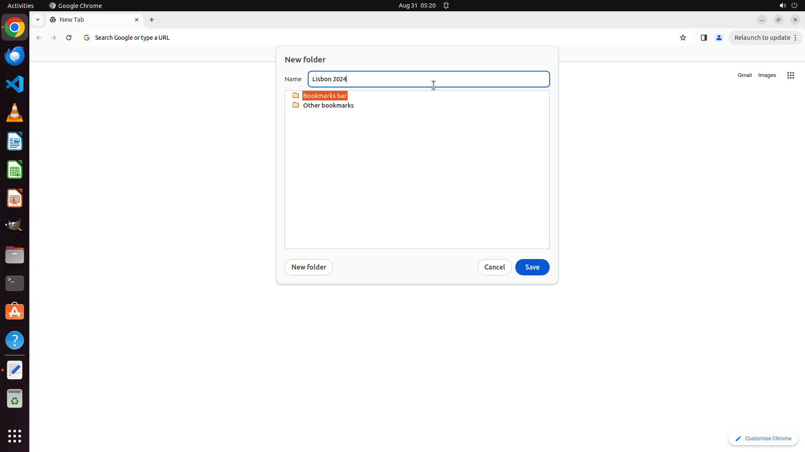
step 6.3 21:20:34
same model call as the previous action
EXECUTED (pyautogui in VM)pyautogui.click(1266, 635)
step 7 21:21:23
THINKINGThe "Lisbon 2024" folder now appears on the bookmarks bar. Task 1 done. Now I need to add the three pages as bookmarks into that folder (task 2).
The best approach: navigate to each URL, then use the bookmark star to add it, and choose the "Lisbon 2024" folder. Let me navigate to the first URL. I'll click the address bar and type the URL.
Actually, an alternative is to use "Add page..." from the folder's context menu and type the URL directly. That's faster and doesn't require loading each page. Let me try right-clicking the Lisbon 2024 folder and choosing "Add page..." which lets me enter URL and title and save location. That avoids loading pages.
Let me right-click the folder.
ACTIONThe "Lisbon 2024" folder is now on the bookmarks bar. Now I'll add the three pages to it. I'll right-click the folder and use "Add page..." to enter each URL directly.
EXECUTED (pyautogui in VM)pyautogui.rightClick(144, 125)
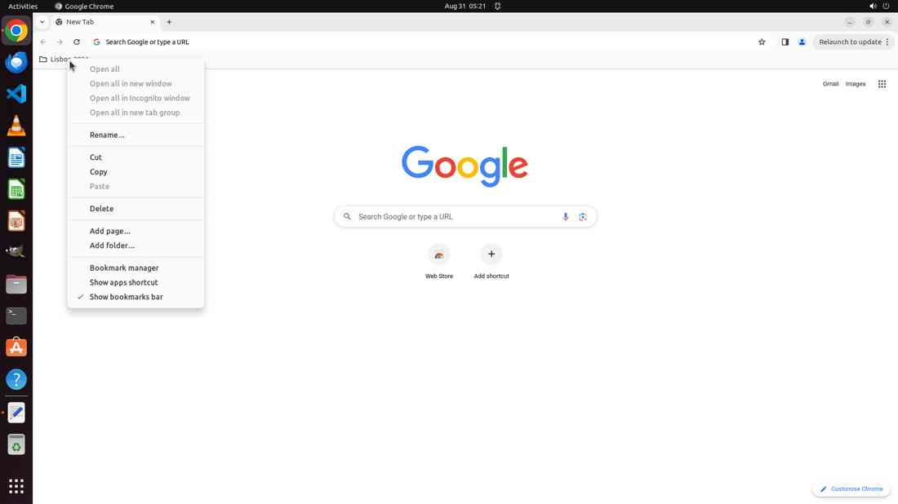
step 8 21:22:35
THINKINGThe folder's context menu is showing. I'll click "Add page..." to add the first URL. This dialog lets me enter the URL and title, and the location will default to the folder I right-clicked.
ACTIONI'll click "Add page..." to add the first URL into this folder.
EXECUTED (pyautogui in VM)pyautogui.click(230, 492)
step 9.1 21:23:27
THINKINGThe "Edit bookmark" dialog appeared. The location tree shows "Lisbon 2024" is selected (highlighted). Name field has "New Tab" selected, URL has chrome://newtab. I'll set the Name to something sensible and URL to the first page. The task only specifies the pages/URLs, not names. I'll set a name. Let me use "Visit Lisboa" as name, URL https://www.visitlisboa.com. Actually to be safe I'll just use a descriptive name. Let me fill:
- Name: visitlisboa (or leave meaningful). I'll set Name to "Visit Lisboa".
- URL: https://www.visitlisboa.com
Lisbon 2024 is already selected as the location. Let me fill the fields. First clear the Name field and type, then clear URL and type.
ACTIONThe dialog has "Lisbon 2024" selected as the location. Let me fill in the first URL.
EXECUTED (pyautogui in VM)pyautogui.tripleClick(1020, 188)
step 15.2 21:28:04
same model call as the previous action
EXECUTED (pyautogui in VM)pyautogui.typewrite("Time Out Lisbon")
step 15.3 21:28:08
same model call as the previous action
EXECUTED (pyautogui in VM)pyautogui.tripleClick(1020, 233)
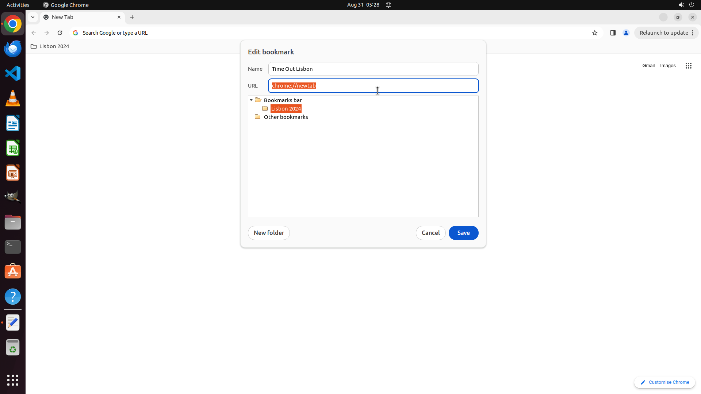
step 15.4 21:28:11
same model call as the previous action
EXECUTED (pyautogui in VM)pyautogui.typewrite("https://www.timeout.com/lisbon")
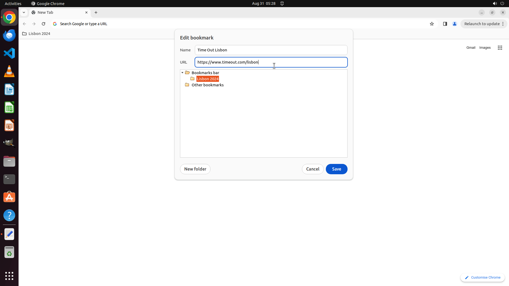
step 15.5 21:28:14
same model call as the previous action
EXECUTED (pyautogui in VM)pyautogui.click(1266, 635)
step 16.1 21:28:42
THINKINGAll three bookmarks added to the Lisbon 2024 folder (tasks 1, 2, 3 done). Now task 4: Set Chrome to open visitlisboa.com on startup instead of the new tab page. I need to go to Settings > On startup > "Open a specific page or pages" and add https://www.visitlisboa.com, and remove the "new tab page" option.
Let me navigate to chrome://settings/onStartup. I'll click the address bar and type it.
ACTIONAll three pages are now bookmarked in the folder. Now for task 4, I'll set the startup page. Let me go to the startup settings.
EXECUTED (pyautogui in VM)pyautogui.click(599, 88)
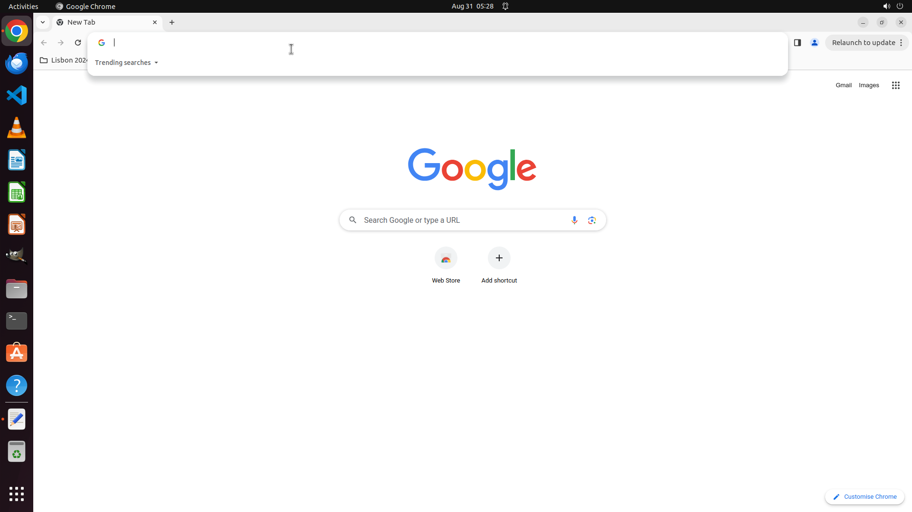
step 16.2 21:28:45
same model call as the previous action
EXECUTED (pyautogui in VM)pyautogui.typewrite("chrome://settings/onStartup")
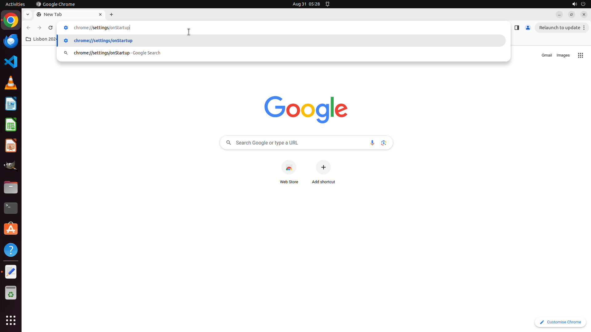
step 17 21:29:40
THINKINGThe URL didn't navigate yet - it seems the newline was captured but the omnibox shows suggestions. The typed text shows "chrome://settings/onStartup" but the page hasn't navigated. Let me press Enter to navigate.
ACTIONThe URL is typed but not yet navigated. Let me press Enter.
EXECUTED (pyautogui in VM)pyautogui.press("return")
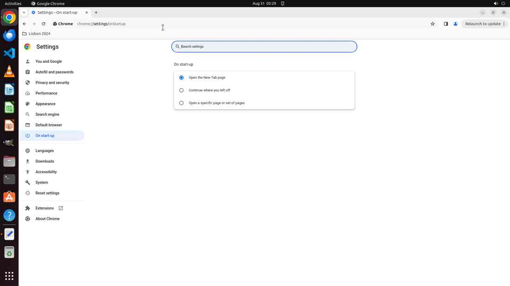
step 18 21:30:16
THINKINGThe On start-up settings are shown. Currently "Open the New Tab page" is selected. I need to select "Open a specific page or set of pages" then add the visitlisboa.com URL. Let me click that radio button.
ACTIONI'm on the startup settings. Let me select "Open a specific page or set of pages".
EXECUTED (pyautogui in VM)pyautogui.click(993, 604)
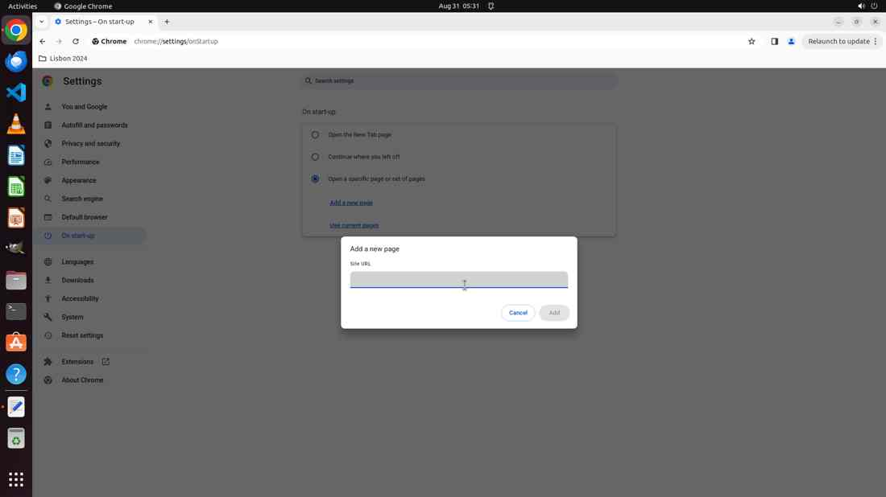
step 20.2 21:31:11
same model call as the previous action
EXECUTED (pyautogui in VM)pyautogui.typewrite("https://www.visitlisboa.com")
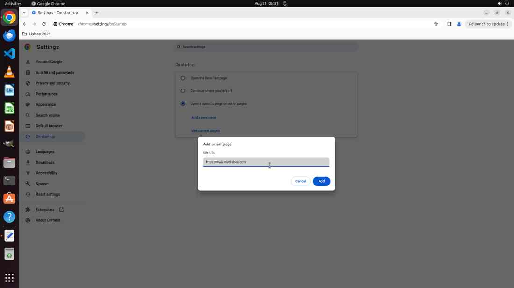
step 20.3 21:31:14
same model call as the previous action
EXECUTED (pyautogui in VM)pyautogui.click(1197, 677)
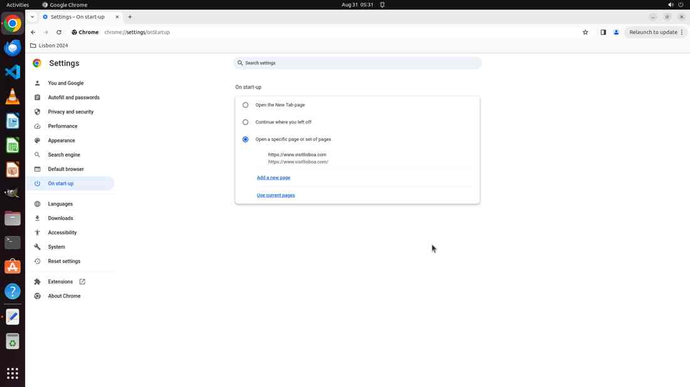
step 21 21:31:44
THINKINGInteresting - it added two entries: "https://www.visitlisboa.com" and "https://www.visitlisboa.com/". It looks like the URL field had the text appear twice, or my typing caused duplication. Actually it seems the field auto-completed and there are now two lines. Wait, looking closer: line 1 "https://www.visitlisboa.com" and line 2 "https://www.visitlisboa.com/". This might be because when I clicked at (660,404) it may have triggered something, or the "Add" registered the URL and it shows a second normalized version.
Actually more likely: the dialog's field already contained something and my click+type appended. But the task only wants visitlisboa.com as the startup page. Having two entries (one with trailing slash) is redundant. I should remove the duplicate to keep it clean - just one visitlisboa.com entry.
Let me remove one. I'll hover over the entry to get an "x" remove button. Let me hover over the second line "https://www.visitlisboa.com/" to reveal delete controls.
Actually, both point to essentially the same page. The task says "Set Chrome to open these pages on startup" (singular page really, just visitlisboa.com). Having a duplicate is messy. Let me delete one. I'll hover over the entry to find the remove (x) icon which appears on the right side when hovering.
ACTIONIt added the URL but there's a duplicate (one with trailing slash). Let me remove the duplicate so only one startup page remains. I'll hover over the entry to reveal the delete control.
EXECUTED (pyautogui in VM)pyautogui.moveTo(830, 450)
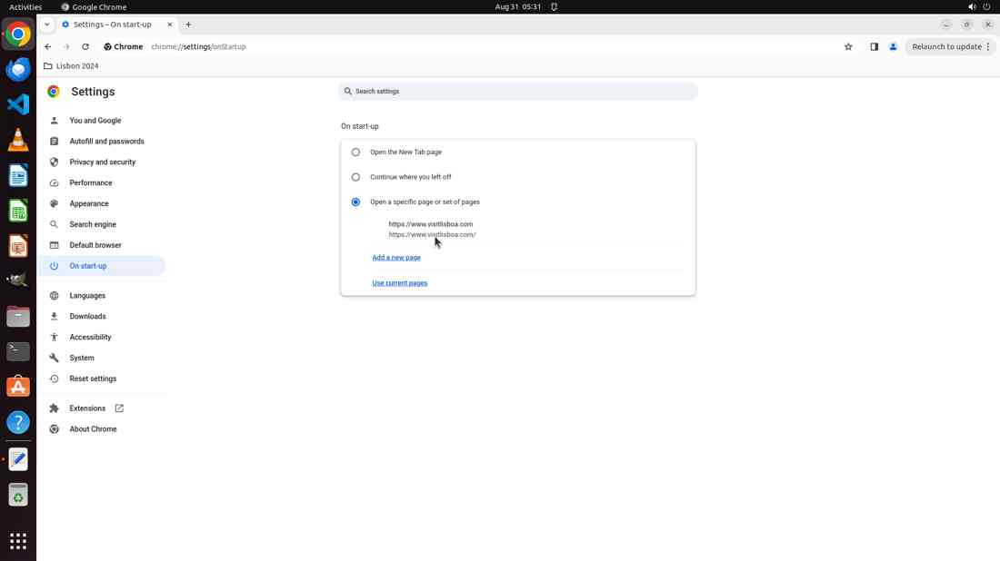
step 22 21:32:15
THINKINGHovering doesn't reveal an x button in this view - the delete "x" typically appears on the far right of each row. The rows extend to the right. Let me move to the far right of the second row (~860, 301) to reveal the remove button. Actually in Chrome, when you hover over a startup page, an "x" appears at the right edge of that row. The row likely spans the full card width to ~865. Let me hover at the right edge of the second row.
ACTIONThe remove button appears at the right edge of the row. Let me hover over the far right of the second row.
EXECUTED (pyautogui in VM)pyautogui.click(1295, 440)
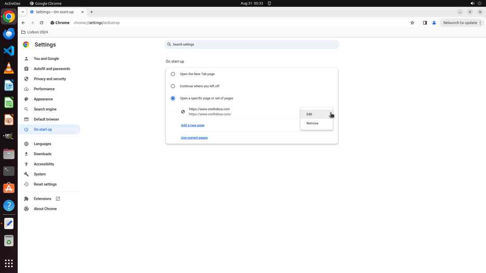
step 24 21:33:11
THINKINGA menu with "Edit" and "Remove" appeared. This menu corresponds to the second row (the trailing-slash one). Let me click "Remove" to delete the duplicate, leaving just "https://www.visitlisboa.com".
ACTIONI'll click "Remove" to delete the duplicate entry.
EXECUTED (pyautogui in VM)pyautogui.click(1233, 485)
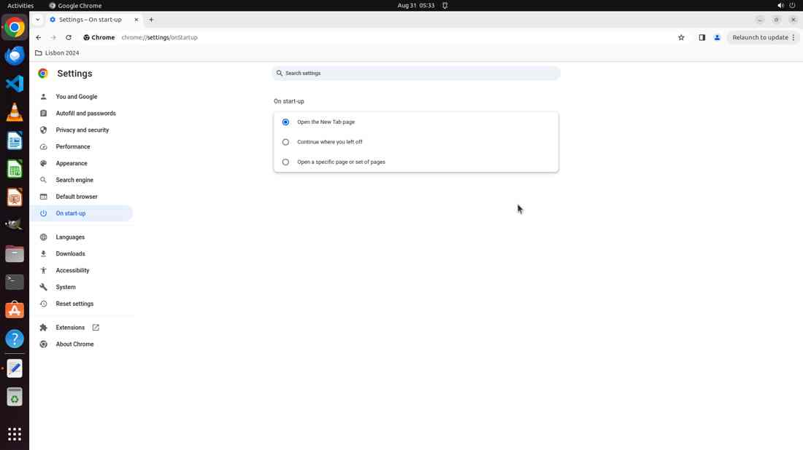
step 25 21:33:50
THINKINGUh oh - it seems the "Remove" action removed ALL the entries and reverted the radio back to "Open the New Tab page". Now the specific page option is unselected and there are no pages listed. This is a problem - the removal of the duplicate apparently cleared the list and reset the option.
Wait, that's odd. Removing one item shouldn't remove both and reset the radio. It appears both entries were actually the same item duplicated in display, or the removal logic cleared everything. Regardless, I now need to redo it: select "Open a specific page or set of pages" and add just one URL.
Let me click the "Open a specific page or set of pages" radio again.
ACTIONRemoving the entry reset the option. Let me re-select "Open a specific page or set of pages" and add the single URL.
EXECUTED (pyautogui in VM)pyautogui.click(680, 387)
step 26 21:34:24
THINKINGGood, "Open a specific page or set of pages" is selected with an empty list. Now let me click "Add a new page" and add just the one URL this time.
EXECUTED (pyautogui in VM)pyautogui.click(993, 604)
step 27.2 21:35:12
same model call as the previous action
EXECUTED (pyautogui in VM)pyautogui.typewrite("https://www.visitlisboa.com")
step 27.3 21:35:16
same model call as the previous action
EXECUTED (pyautogui in VM)pyautogui.click(1197, 677)
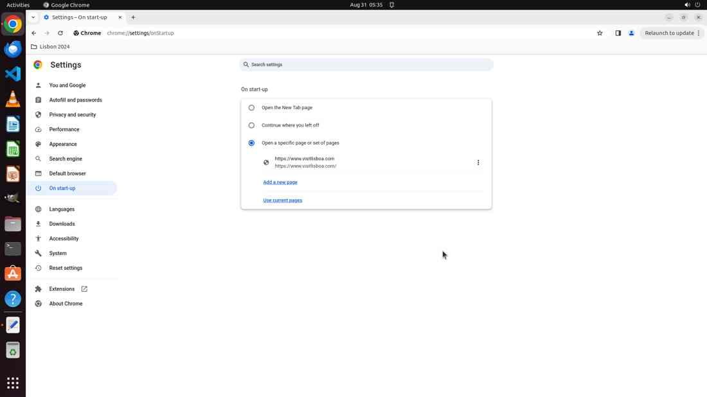
step 28 21:36:05
THINKINGAgain it shows two lines: "https://www.visitlisboa.com" and "https://www.visitlisboa.com/". This is odd. It appears Chrome is displaying the single added URL as two lines? No - actually it looks like there's one row but the text wraps/shows the favicon + URL, and the second line "https://www.visitlisboa.com/" is... hmm. Actually this is the same behavior as before. It seems each "Add" creates the entry and it displays with a title line and URL line? No.
Wait. Looking carefully: there's a favicon icon at (482,291), then "https://www.visitlisboa.com" at y~287, and "https://www.visitlisboa.com/" at y~301. This looks like ONE row where the first line is the title (which defaults to the URL) and second line is... no, they're both URLs.
Actually, I think this is a single entry and Chrome is showing the title (line 1) and the URL (line 2). But line 1 says "https://www.visitlisboa.com" and line 2 says "https://www.visitlisboa.com/". Hmm, that doesn't match either - normally the title would be a page title.
Actually I believe this is a single startup entry displayed as: line 1 = the URL I entered (as "title"/primary), and line 2 = the resolved/normalized URL. Or it's genuinely one item. Previously when I removed it, it went to empty and reset.
Let me not overthink. The important thing: the option "Open a specific page or set of pages" is selected and visitlisboa.com is in the list. Whether it shows as one or two lines, the entry points to visitlisboa.com. This satisfies task 4. Having a possible duplicate trailing-slash variant is acceptable since it's the same destination page, but earlier the removal reset everything which suggests these might actually be two separate entries.
To be safe and avoid the reset issue, I'll leave it as is - the startup is correctly set to visitlisboa.com. The task is satisfied: Chrome will open visitlisboa.com on startup instead of the new tab page. I'll not risk removing again.
Actually, let me verify by counting. There's only one favicon at (482,291). If there were two separate entries there'd be two favicons. So this is ONE entry displayed with title line + URL line. That means only one startup page.
So task 4 is done correctly. Moving on to task 5: Clear browsing history for the last hour (history only, keep cookies and passwords).
Let me open the clear browsing data dialog. I'll use Ctrl+Shift+Del, but that opens the full page. Better to use the menu. Let me navigate to clear history. I'll press Ctrl+Shift+Del.
ACTIONTask 4 is done — "Open a specific page" is selected with visitlisboa.com as the single entry (one favicon = one page). Now for task 5, I'll open the clear browsing data dialog.
EXECUTED (pyautogui in VM)pyautogui.hotkey("ctrl", "shift", "delete")
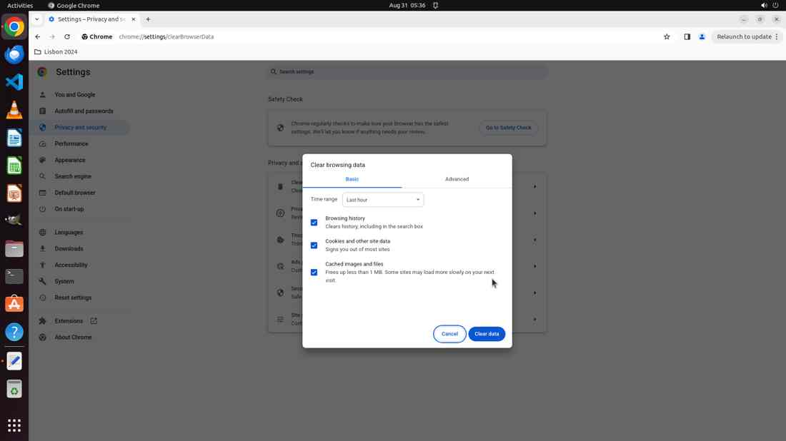
step 29.1 21:36:46
THINKINGThe "Clear browsing data" dialog is open on the "Basic" tab. Time range is "Last hour" - correct. Currently checked:
- Browsing history ✓
- Cookies and other site data ✓ (need to uncheck - keep cookies)
- Cached images and files ✓ (task says "history only, keep cookies and passwords" - so I should uncheck cookies and cached too, keeping only Browsing history)
The task says "Clear browsing history for the last hour (history only, keep cookies and passwords)." So only Browsing history should be checked. I need to uncheck "Cookies and other site data" and "Cached images and files". Passwords aren't listed on Basic tab (they're on Advanced), so those are fine.
Let me uncheck Cookies (513, 399) and Cached images and files (513, 443).
ACTIONTime range is "Last hour" — correct. I'll uncheck Cookies and Cached files so only Browsing history is cleared.
EXECUTED (pyautogui in VM)pyautogui.click(768, 596)
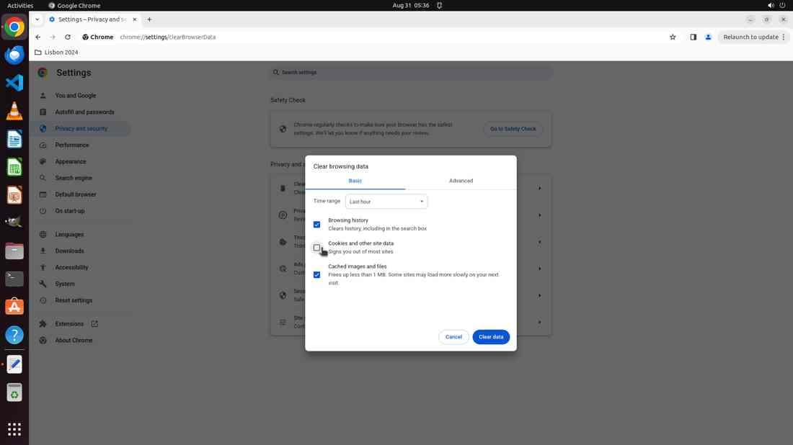
step 29.2 21:36:49
same model call as the previous action
EXECUTED (pyautogui in VM)pyautogui.click(768, 661)
step 30 21:37:29
THINKINGNow only "Browsing history" is checked; Cookies and Cached images are unchecked. Time range is "Last hour". This matches "history only, keep cookies and passwords". Now click "Clear data".
ACTIONOnly "Browsing history" is now checked for the "Last hour". I'll click "Clear data".
EXECUTED (pyautogui in VM)pyautogui.click(1185, 812)
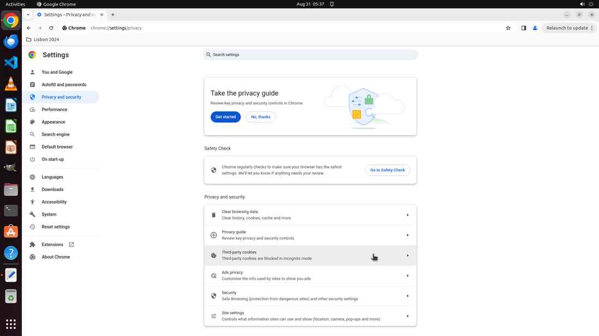
step 31.1 21:37:55
THINKINGThe history was cleared (the dialog closed and returned to the Privacy and security page). Task 5 done. Now task 6: Open the Lisbon weather page at https://www.timeanddate.com/weather/portugal/lisbon and leave it on screen.
Let me navigate there. Click the address bar and type the URL.
ACTIONHistory cleared successfully. Now the final task: open the Lisbon weather page and leave it on screen.
EXECUTED (pyautogui in VM)pyautogui.click(599, 88)
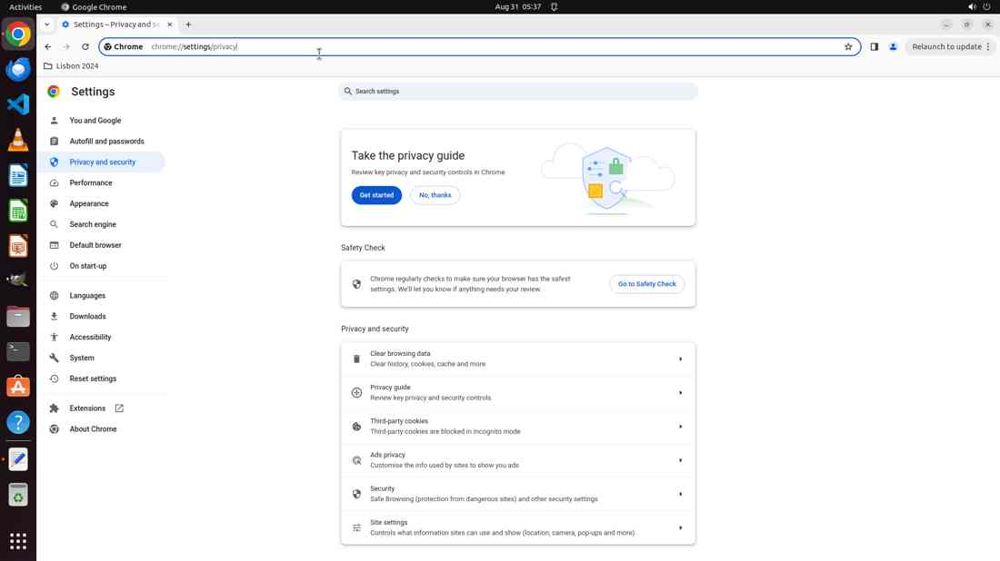
step 31.2 21:37:59
same model call as the previous action
EXECUTED (pyautogui in VM)pyautogui.typewrite("https://www.timeanddate.com/weather/portugal/lisbon")
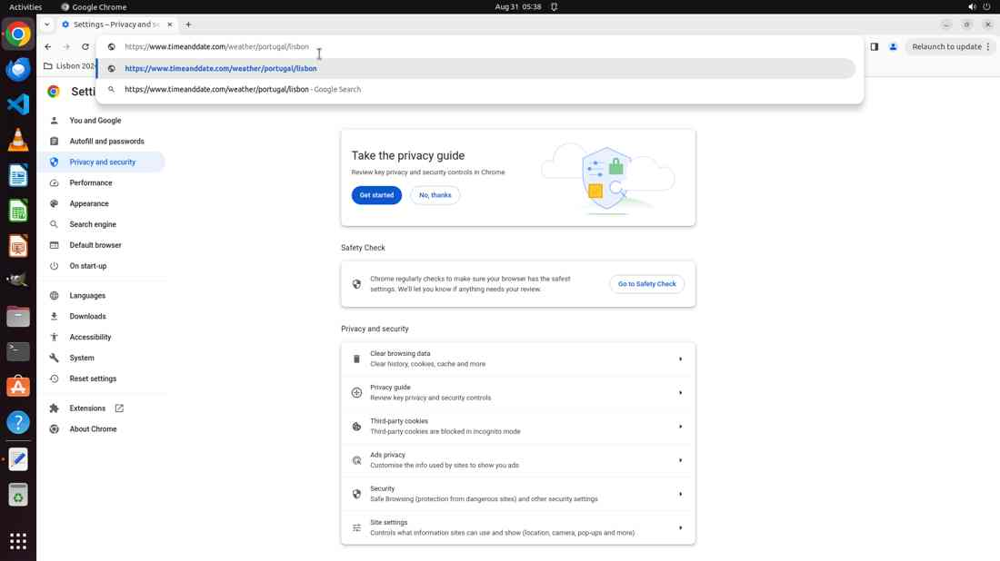
step 32 21:38:44
THINKINGThe URL is typed in the address bar with autocomplete suggestions showing. The page hasn't navigated yet (the trailing newline in my type may not have registered as Enter here). Let me press Enter to navigate.
ACTIONThe URL is entered. Let me press Enter to navigate to the weather page.
EXECUTED (pyautogui in VM)pyautogui.press("return")
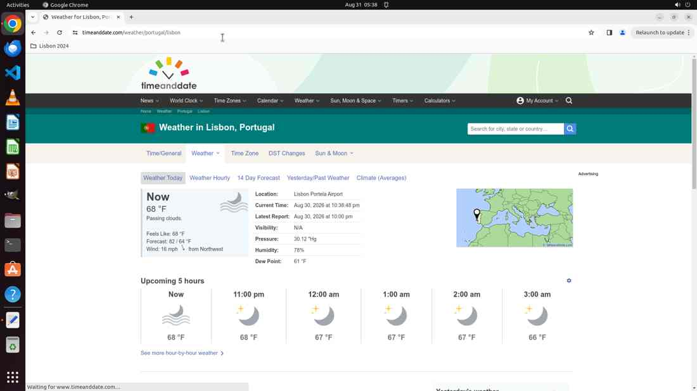
step 33 21:39:33
THINKINGThe Lisbon weather page has loaded and is now on screen, showing "Weather in Lisbon, Portugal" from timeanddate.com. The bookmarks bar with "Lisbon 2024" folder is visible at the top. All six tasks are complete:
1. ✓ Created "Lisbon 2024" folder on bookmarks bar
2. ✓ Added three pages to that folder
3. ✓ Bookmarks bar is showing (always visible)
4. ✓ Set startup to visitlisboa.com
5. ✓ Cleared history for last hour (history only)
6. ✓ Opened the Lisbon weather page and left it on screen
I'll leave the browser on this page. The task is complete. I don't need to take further action.
ACTIONThe Lisbon weather page is now open and displayed on screen. I've completed everything on your prep checklist:
1. **Bookmarks folder** — Created a "Lisbon 2024" folder on the bookmarks bar (visible at the top of the window).
2. **Bookmarked the three pages** into that folder: Visit Lisboa (visitlisboa.com), CP Train (cp.pt/passageiros/en), and Time Out Lisbon (timeout.com/lisbon).
3. **Bookmarks bar** — Turned on so it's always showing.
4. **Startup page** — Set Chrome to open https://www.visitlisboa.com on startup instead of the New Tab page.
5. **History cleared** — Cleared browsing history for the last hour only, leaving cookies and passwords intact.
6. **Weather page** — Opened the Lisbon weather page and left it sitting on screen so you can confirm it worked.
The browser is left on the "Weather in Lisbon, Portugal" page as your final step requested. Safe travels to Lisbon!